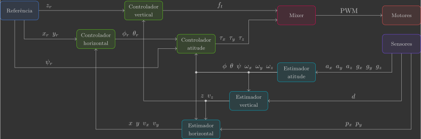
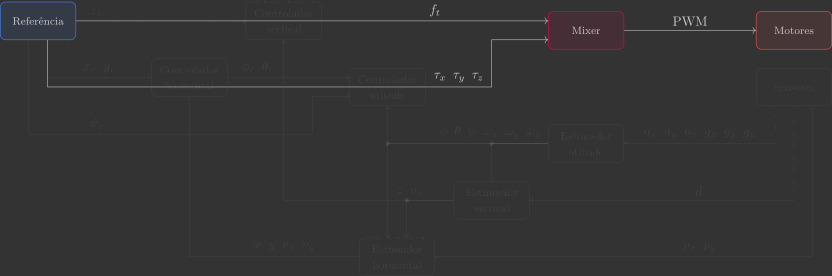

Architecture
To control a quadcopter, we need a well-defined architecture. This architecture specifies how sensor measurements are processed by estimators, compared with reference signals by controllers, and finally converted into commands sent to the actuators.
The diagram below summarizes this sequence using block representation:

In the diagram:
- The blocks represent the functions that will be called inside the main loop.
- The arrows represent the variables flowing from one block to another.
The information exchange between these functions will be handled through global variables(1), which act as the “wires” connecting the system modules.
- Although global variables are generally not considered best practice in software engineering, we adopt this approach here to keep the C code straightforward and avoid excessive pointers and semaphores. Since the focus of this course is control theory — not software architecture — this decision improves clarity without compromising learning.
Source Code
To get started, create a file called main.c inside the src/control folder. This file will be organized into three major parts, described below.
Definitions
The first part contains all libraries, parameters, constants, and variables.
Libraries
At the top of the file, import all(1) required libraries:
- Some of these libraries will only be used later, but we include them now to avoid revisiting this section repeatedly.
1 2 3 4 5 6 7 8 9 | |
Parameters and Constants
Next, declare(1) the physical constants and quadcopter parameters:
- We use
constto ensure the value does not change at runtime. Thestatickeyword restricts the variable’s visibility to the current file, preventing name conflicts in other compilation units. Together,static constdefines immutable, file-scoped constants.
11 12 13 14 15 16 17 18 19 20 21 | |
Global Variables
Then, declare the variables that flow from one block to another, mirroring the architecture diagram.
23 24 25 26 27 28 29 30 31 32 33 34 35 36 37 38 39 40 41 42 43 44 | |
Logging Variables
Finally, define which of these variables will be logged so they can be sent to the Crazyflie Client and visualized in real time(1).
- We use auxiliary variables for Euler angles because the Crazyflie Client expects angles in degrees rather than radians.
46 47 48 49 50 51 52 53 54 55 56 57 58 59 60 | |
Functions
The second part consists of the functions that will be called inside the main loop:
62 63 64 65 66 67 68 69 70 71 72 73 74 75 76 77 78 79 80 81 82 83 84 85 86 87 88 89 90 91 92 93 94 95 96 97 98 99 100 101 102 103 104 105 106 107 108 109 110 | |
Notice that all functions are currently declared but left empty. This is intentional: we will implement them step by step, one function at a time. This approach allows you to clearly understand the role of each component before seeing the complete system running.

In the next sections, we begin with the actuators, sensors and reference functions — which form the interface between our code and the physical world.
After that, we introduce the mixer and then move on to estimators and controllers. Each subsystem will be studied in pairs — attitude (orientation), vertical (altitude) and horizontal (planar position) — combining estimation and control concepts from both classical and modern control theory in a structured and pedagogically progressive sequence.
-
Mixer
We implement a coordinate transformation that allows us to work with aerodynamic forces and torques as system inputs instead of raw motor PWM signals.
-
Attitude
We study low-pass filters, high-pass filters, and the complementary filter for sensor fusion. Stabilization is achieved using a cascaded P–P controller acting on angular velocity and angle, forming the fastest control loop in the system.
-
Vertical
We introduce first- and second-order state observers to estimate vertical velocity and position. We start with a PD controller, which naturally evolves into a PID when compensating for steady-state error caused by constant disturbances such as gravity.
-
Horizontal
We advance to optimal state estimation and regulation. We show that the LQE is simply a linear Kalman filter, while the LQR corresponds to a PD controller with optimal gains. When estimation and control are optimally integrated, we obtain the well-known LQG framework.
Main Loop
The third and final part contains the main loop. All control logic is implemented inside a loop running at 200 Hz (i.e., every 5 ms). Inside this loop, we call the functions following the architecture diagram sequence: references → sensors → estimators → controllers → actuators.
112 113 114 115 116 117 118 119 120 121 122 123 124 125 126 127 128 129 130 | |